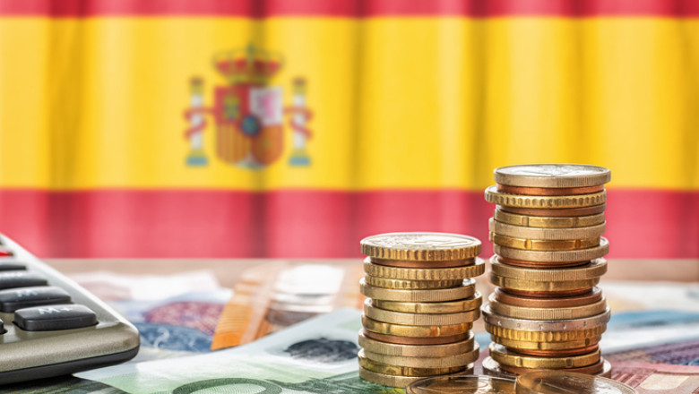

- Ce înseamnă sustenabilitatea? – Conceptul presupune dezvoltarea care răspunde nevoilor prezentului fără a compromite capacitatea generațiilor viitoare de a-și satisface propriile nevoi. Cei trei piloni — mediu, economie și societate — trebuie echilibrați simultan pentru o tranziție reală.
- De ce Spania? – Cu peste 47 de milioane de locuitori, un climat divers (de la munți la coaste mediteraneene) și o economie puternic dependentă de turism și agricultură, Spania este una dintre țările europene cele mai expuse la efectele schimbărilor climatice — secetă, valuri de căldură și incendii forestiere.
- Amploarea provocărilor – Aproape 75% din teritoriul Spaniei este afectat de risc de deșertificare, conform Agenției Spaniole pentru Mediu. Totodată, țara s-a angajat prin Planul Național Integrat de Energie și Climă (PNIEC) să reducă emisiile de gaze cu efect de seră cu 32% până în 2030 față de 1990.
- Scopul jurnalului – Această lucrare își propune să documenteze, pe baza datelor publicate de Eurostat, INE Spania și Ministerul Tranziției Ecologice, modul în care Spania transformă provocările climatice în oportunități prin energie regenerabilă, turism responsabil și politici verzi inovatoare.
